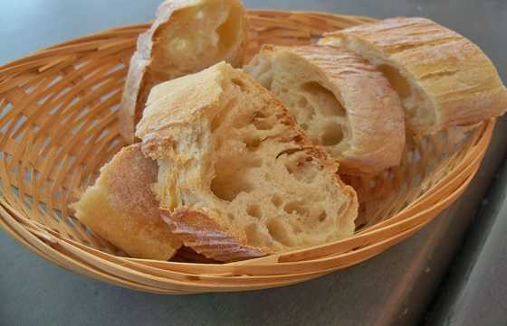

お店のこと
お店のInstagramプロフィールでは、ご自身のお店を「まちの小さなパン屋さん」と紹介しています。このページのコンセプトも、その言葉から決めました。大きく飾らず、まちの暮らしの隣にあるパン屋、という雰囲気です。
配色は、焼き色のような茶色とクリーム色、少しのバラ色と若草色(制作側のイメージです)。店名「さとうぱん」の由来や、オーナーさんの想いについては、公開情報から確認できませんでした。確認できていないことは書かないことにしています。
確認できた情報の出典: お店のInstagram(@satoupan418)プロフィール・投稿。

パン・メニュー
Instagramの投稿で見かけた種類です。日によって並ぶものは変わると思われます。価格・詳しい内容は準備中です。
価格: 準備中


写真はすべてフリー素材のイメージで、お店の実際の商品・風景ではありません。
口コミ
以下は制作側が作ったイメージ例です。実在のお客様の声ではありません。
イメージ例
近所にあると、ふらっと寄りたくなる小さなパン屋さんです。
(イメージ例・創作)イメージ例
種類が少しずつ違う日があって、のぞくのが楽しみになります。
(イメージ例・創作)イメージ例
手みやげにも、自分用にも選びやすい雰囲気でした。
(イメージ例・創作)アクセス・ご案内
| 所在地 | 〒960-8054 福島県福島市三河北町3-16 |
|---|---|
| 営業時間 | Instagramプロフィールに「10:30〜17:00」との表記あり(最新情報はInstagramでご確認ください) |
| 定休日 | Instagramプロフィールに「火・水曜」との表記あり(同上) |
| 電話 | 準備中 |
| 駐車場 | 準備中 |
| @satoupan418 |